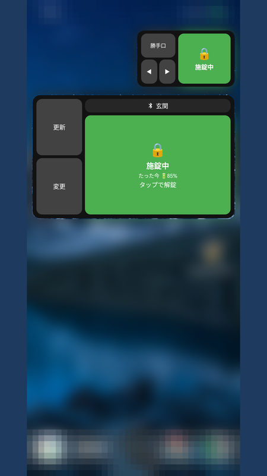
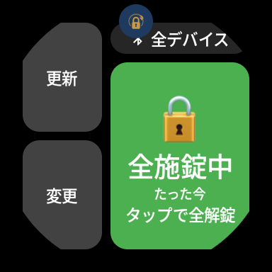
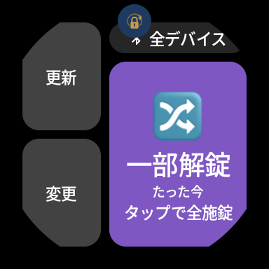
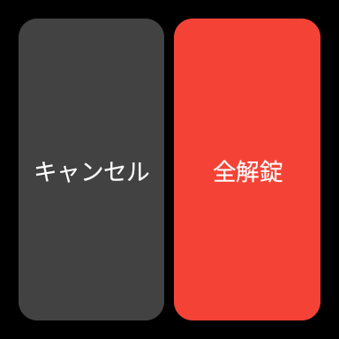
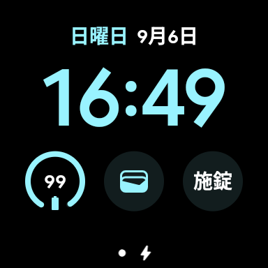
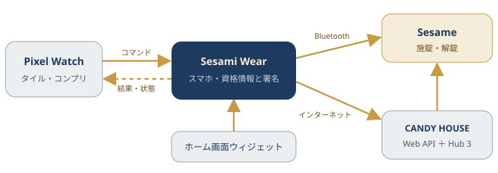

Sesami Wear
手首から
鍵をかける
Pixel Watch のタイルやスマートフォンのホーム画面ウィジェットから、CANDY HOUSE の Sesame スマートロックをワンタップで施錠・解錠。結果は振動で伝わるので、画面を見返す必要はありません。

機能
鍵の資格情報はスマートフォンだけが持ち、ウォッチは「施錠して」「解錠して」を伝えるだけの設計です。
-
タイル
ワンタップで施錠・解錠
Wear OS のタイルから操作します。施錠は即時、解錠は誤操作を防ぐため確認を挟みます。通信中はボタンを無効にして二重送信を防ぎます。
-
振動
結果は手首で分かる
施錠・解錠の成功と失敗を、異なる振動パターンで知らせます。画面を見なくても鍵がかかったか確かめられます。
-
コンプリケーション
文字盤に施錠状態
ウォッチフェイスのコンプリケーションに現在の状態を表示します。最後に状態を取得した時刻もあわせて示します。
-
ウィジェット
ウォッチが無くても使える
スマートフォンのホーム画面ウィジェットから、タイルと同じ表示・操作で施錠・解錠できます。大きさも変えられます。
-
複数台
玄関も勝手口もまとめて
複数の Sesame を登録し、タイル・コンプリケーション・ウィジェットごとに操作対象を選べます。「全デバイス」で一括操作も可能です。
-
通信経路
近くは Bluetooth、遠くはネット
Sesame の近くでは Bluetooth で直接操作し、離れているときはインターネット経由へ自動で切り替えます。どちらで操作したかも表示します。
-
診断
電池残量と操作の記録
Sesame の電池残量を表示し、直近 50 件の施錠・解錠・状態取得を診断ログで確認できます。不具合の報告にもそのまま使えます。
-
デモ
登録前に操作感を試せる
Sesame を登録していない状態では、実際の鍵を操作しない「デモ」でタイルやウィジェットの動きを確かめられます。
画面
Pixel Watch 2 での表示です（0.14.0。コンプリケーションは以前の版で撮影）。
-

タイル（施錠中）
大きなボタンが状態と次の操作を示します。
-

タイル（一部解錠）
複数台の状態が揃っていないことも一目で分かります。
-

解錠の確認
解錠だけは確認を挟み、誤操作を防ぎます。
-

コンプリケーション
文字盤から現在の状態を確認できます。
仕組み
秘密鍵（secretKey）はスマートフォンの中だけにあり、ウォッチには渡しません。

使い方
最初に Sesame の資格情報を登録すれば、あとはタイルかウィジェットをタップするだけです。
- SESAME Biz 開発者ページ（biz.candyhouse.co）で、uuid・apikey・secretKey の 3 点を確認・発行します。
- スマートフォンの Sesami Wear を開き、3 点とデバイス名を登録します（端末内に暗号化して保存します）。
- ウォッチのタイル一覧で「＋」から Sesami Wear を追加し、操作したいデバイスを選びます。ウォッチが無い場合はホーム画面にウィジェットを置きます。
- ボタンをタップすると施錠します。解錠は確認画面で「解錠」を押します。成功・失敗は振動で分かります。
詳しい手順は利用ガイドを参照してください。
プライバシーと注意
開発者が管理するサーバーはありません。広告・アクセス解析の SDK も組み込んでいません。
- 資格情報はスマートフォンに暗号化して保存し、ウォッチには保持しません。secretKey は端末内で署名の計算にだけ使い、送信しません。
- 通信先は CANDY HOUSE の Web API（施錠・解錠の指示と状態の取得）と、近くの Sesame との Bluetooth 通信だけです。
- Bluetooth の許可は任意です。スキャン結果から位置情報を推定することはなく、位置情報の収集・送信も行いません。
収集する情報の範囲はプライバシーポリシーを参照してください。
本アプリは個人による非公式アプリで、CANDY HOUSE 株式会社とは提携・協力関係にありません。公開されている Sesame API を利用していますが、 同社による動作保証・サポートの対象外です。アプリ名の「Sesami」は公式製品の「Sesame」と取り違えないよう綴りを変えた造語です。
入手
現在は Google Play のクローズドテストで配信しています（参加方法は案内ページを参照してください）。
検証状況
| Sesame の機種 | インターネット（Wi-Fi）での操作 | Bluetooth での直接操作 |
|---|---|---|
| Sesame 5 | ◎ Hub 3 | ◎ |
| Sesame 6 Pro mini | ○ Hub 3 | － |
| Sesame 3 | ○ Wi-Fiモジュール2 | － |
| 上記以外 | － | － |
◎ 実機で確認済み ○ 動作の報告あり（開発者は再現確認していません） － 未確認（動作しないという意味ではありません）
インターネット（Wi-Fi）での操作には、Hub 3 または Wi-Fiモジュール2 が必要です。Bluetooth での直接操作は、これらが無くても使えます（Sesame 5 系のモデルを想定した実装です）。動作の可否は問い合わせ窓口へお知らせください。
| 動作環境 | Android 8.0（API 26）以上のスマートフォン。タイル・コンプリケーションを使う場合は Wear OS 3 以上のウォッチ |
|---|---|
| 確認端末 | Pixel 8 Pro、Pixel Watch 2 |
| 配信 | Google Play（クローズドテスト）。スマートフォン用とウォッチ用は同じ掲載ページから入手 |
| ライセンス | MIT License |